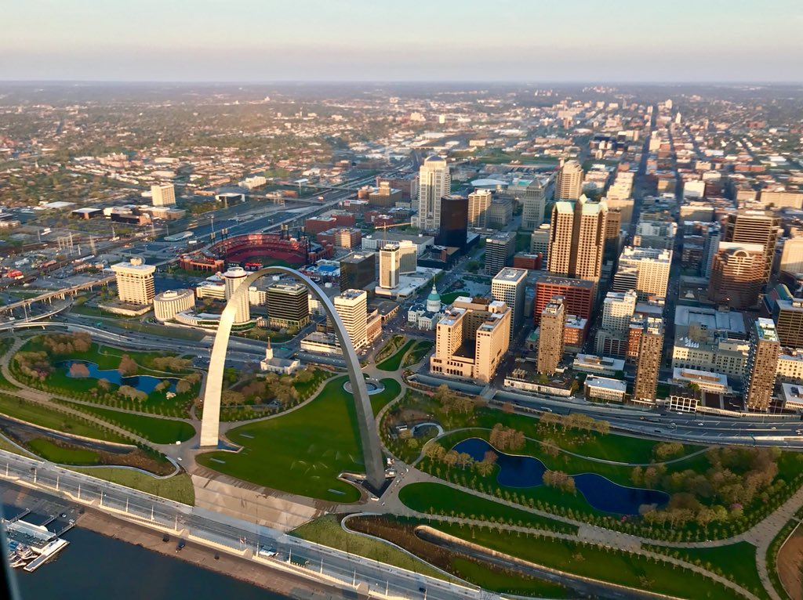

aaaaaah St.Louis, The Place I Was Born And The Place I Cant Get Away Fast Enough From
Dont Get Me Wrong I Love My City But, Some Things Aren't Ment To Last. Me Staying In STL is One Of Them

Dont Get Me Wrong I Love My City But, Some Things Aren't Ment To Last. Me Staying In STL is One Of Them
I Met Some Cool Cats In That Trade, Some Of The Hardest Working And Genuine People You'll Ever Meet.
I Have Goals And Ideas I Want To Accomplish, That Iron Working Alone Wont Be Able To Get Me Where I Want To Be.
Plus Im Sick Of Imo's.